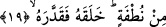

kalıpları içerisinde vârid olan bir sözdür. Bu ifâde, kendisine kötülük yapılan kişinin,
hasmından intikam almaktan âciz kalınca, yöneltmiş olduğu bedduâ kabilinden bir ifâde
değildir. Aynı şekilde bu “hayret bildirme ve şaşkınlık ifâdeleri” de gerçek
anlamlarında değillerdir. Çünkü Allah Teâlâ âciz kalmaktan ve karşılaştığı bir olayın
sebebini bilmemekten münezzehtir. Tam tersine bedduâ formunda ifâde kullanılmak
sûretiyle vurgulanmak istenen, Allah’ın büyük gazabıdır. O kâfirin cezâların en
korkuncuna ve en şenîsine lâyık olduğuna dikkatleri çekmektir. Ayrıca ifâdede hayret ve
şaşkınlık kalıbının kullanılmasıyla amaçlanan hedef ise söz konusu kâfiri son derece
vurucu bir ifâdeyle kınamaktır. Çünkü böylesi bir kâfir, çirkin fiillerin en çirkinini
işlemiş olmaktadır. Kuşkusuz Allah’ın gazaplanması mümkündür. Yine Allah’ın
herhangi bir durumu zemmetmesi ve kınaması da mümkündür. Ayrıca yukarda
okuduğumuz “ma ekferahu/Ne nankördür o” ifâdesinin, bir şaşkınlık ve hayret ifâdesi
mümkün olduğu gibi soru kalıbı olması da mümkündür. Bu takdirde ifâde ile “kınama ve
azarlama” vurgulanmış olur. Böylece âyetin mânâsı “ne nankördür” şeklinde değil de,
“insanı inkâra sürükleyen nedir?” şeklinde olmuş olur. Burada geçen “el-insan”
ifâdesinden maksad; ya yukarda nitelikleri zikredilen ve kendisini öğüt ve nasihate
muhtaç görmeyen kâfir insandır. Ya da bu bir cins ismi olarak “insan cinsi”dir. İnsan
cinsi olunca bu cinsin içerisine kendini muhtaç görmeyen kâfir ve onun benzeri olan
diğer insan fertleri de girer. Yalnız bütün insan ferdinin a’dan z’ye bu cins ismin içine
girmesi -burada- mümkün değildir.
18. Allah onu neden yarattı?
Yani Allah onu hakir, değersiz bir şeyden yarattı. Sonra Allah bizzat kendisi bu
değersiz şeyin ne olduğunu açıklıyor.
19. Bir nutfeden yarattı da ona şekil verdi.
Aslı ve ana cevheri böylesi hakir ve değersiz bir sperm olan kimseye böbürlenme,
zorbalık ve kendine nimet veren yaratıcısının üzerindeki hakkını inkâr yakışır mı? Bu
hakir şeye böylesi eşsiz sûreti giydiren nimet sâhibi hakkında nankörlük etmek yakışır
mı? İmam Secâvendi “min nutfe” üzerinde vakf yapmış ve bu kelimenin üzerine mutlak
vakf işâreti koymuştur. Onun değerlendirmesine göre “nutfe” kelimesinden sonra gelen
“halekahu/onu yarattı” kelimesi ayrı bir “yaratma”yı ifâde etmektedir. Bu gerçeği
“nutfe” kelimesinden önce geçen ifâdeler bize göstermektedir. Secavendi “halekahu fe